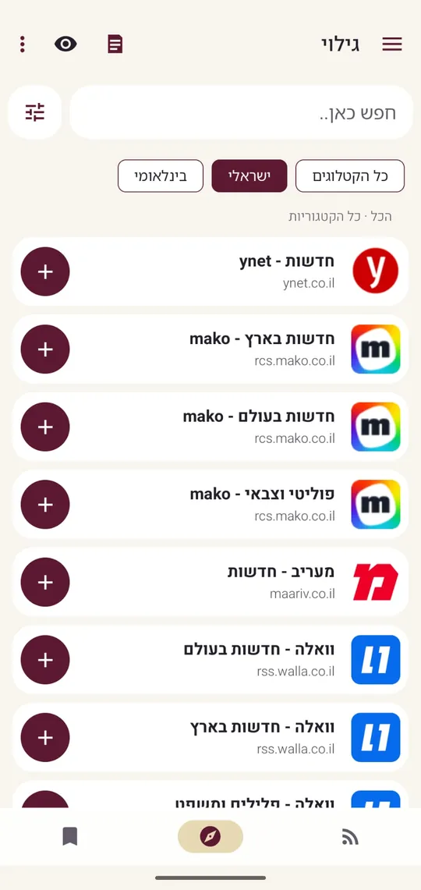

01
פיד אחד לכל המקורות
מוסיפים אתרים ובלוגים, מסדרים בתיקיות, ומוצאים מקורות נוספים בחיפוש.


Pirate RSS היא אפליקציית קריאה למי שעוקב אחרי הרבה בלוגים ואתרים. מוסיפים מקורות, פותחים את האפליקציה, קוראים.
להורדה מ-Google Play
לרוב האתרים יש פיד: רשימה פשוטה של הכתבות האחרונות שהם פרסמו. אפליקציית RSS אוספת את הפידים מכל האתרים שהוספתם ומציגה אותם יחד, מהחדש לישן.
אז במקום לפתוח עשרה טאבים כדי לראות מה התפרסם, פותחים אפליקציה אחת. אתם קובעים אילו אתרים בפנים, וזה בדיוק מה שתראו.
מוסיפים אתרים ובלוגים, מסדרים בתיקיות, ומוצאים מקורות נוספים בחיפוש.

טקסט הכתבה עם התמונות שלה, ערכת נושא בהירה או כהה, ותמיכה מלאה בעברית ובשפות משמאל לימין.


תקציר קצר של הכתבות האחרונות מהמקורות שבחרתם.

מקשיבים לכתבה בהקראה, והכתבות הבאות כבר בתור. שולטים בניגון גם מההתראה.

מתרגמים כתבה לשפת האפליקציה ובוחרים איך התרגום מתבצע.

סריקה חכמה, לבחירתכם, מקבצת כתבות דומות לערימה אחת. פותחים ובוחרים מה לקרוא.

ההגדרות והכתבות ששמרתם מגובות בענן. או שפשוט ממשיכים כאורחים.
כותרות במסך הבית, מכל המקורות או ממקור אחד שבחרתם.

זמינה בארבע שפות.